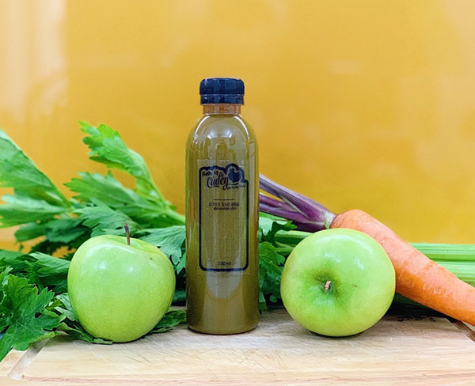

350ml Round Pet Plastic Bottle
5.000/-


By PETBot's Staff, 25 Dec 2022.
Are you intending to buy a bottle to store juice for use in your family, company or business? Wondering whether to use plastic bottles or glass bottles? So let's learn about these two types of PET bottles with Saigon PET bottles through the article below to make the right choice!
Here are the advantages and limitations of plastic bottles, please refer to:
Plastic bottles often have a variety of capacities, but are generally compact, from 350ml to 500ml. With such a size, customers can easily carry it to school, work or to the gym. Besides, the biggest advantage of plastic bottles is that they don't have to worry about breaking when they accidentally drop them on the ground. Therefore, whether you are selling or buying for home use, it is very suitable for you.
In addition to the available models, you can order to make bottles with a specific shape or capacity, suitable for your needs. As you know, plastic is flexible, so it can be molded into any shape. Currently, the most popular plastic bottle models include: Round, square, triangle, light bulb, dwarf, tall, giant bottles, etc. The capacity is from 200ml, 250ml, 300ml, 350ml, 500ml to 1 liter spoiled for choice
Another advantage that many people decide to buy plastic bottles is because the price is quite cheap compared to glass bottles and stainless steel bottles. On average, a plastic bottle only costs from 500 VND to 1,500 VND / bottle, depending on the capacity, design and plastic material used. But in general, this is still a very competitive price, suitable for juice and smoothie shops to use as packaging.
- Some plastics can produce toxic substances during use or reuse - During the production process, some facilities add BPA, Antimony and some additives harmful to human health to increase the aesthetics and transparency of the bottle. Plastic is an environmentally unfriendly material and is rejected by many young people Plastic bottles are easily dented and deformed upon impact

Therefore, to overcome the above limitations, you need to choose carefully when buying plastic bottles: Choose PET plastic material with the symbol "PET", "PETE" or number 1 on the bottom of the bottle. The bottle shell needs to be sturdy so as not to be deformed and unsightly. At the same time, minimize the use of plastic bottles at the shop, which only applies to takeaway customers.
Compared with plastic bottles, the advantages and limitations of glass bottles are as follows:

- Safe for users' health Chemically, glass is an inert material, so there is no change or production of toxic substances dissolved into the drink inside. Therefore, this is a type of bag because it is very safe when storing food and drinks. Glass is resistant to high temperatures, so hot or cold water does not change and does not create harmful substances.
Compared to plastic, glass has a bit more luxury thanks to its transparent, sturdy surface and sparkles in the light. Thanks to that, the smoothie or juice contained inside also looks much more attractive. If buying to use at home or at work, the glass bottle is a very suitable choice. Because it brings a luxurious and high-class feeling to the space. But glass bottles are not suitable to bring to school or work because they are very heavy and break easily.
If plastic bottles are recommended not to be reused, glass bottles are the exact opposite. You can clean and reuse your glass many times without fear of bacteria or harmful substances accumulating.
If plastic bottles can only be recycled a few times, glass can be recycled and reused an infinite number of times. Therefore, using glass bottles can help reduce the amount of waste in the environment a lot.

Despite the many aesthetic and environmental advantages, there are undeniably few juice shops that use glass bottles. It is because of the following limitations:
- The cost is much higher than plastic bottles
- Difficult to transport because it is easy to break when falling to the ground
- When the tank creates very dangerous debris
Therefore, glass bottles are often used at home, in the office and served to customers to drink at the bar. However, currently in the city. Ho Chi Minh City has a coffee shop Kam Kam Cafe that is still serving customers with glass bottles to take away. The shop encourages customers to return to return bottles by giving them a discount code. This is also a way to create a unique brand for your brand that you can consider.
Both plastic and glass bottles have their own advantages and limitations. Depending on the evaluation criteria, there will be a superior bottle. As follows:
- Color: Both plastic bottles and glass bottles have transparent, glossy colors that create an attractiveness for the drink inside. The clarity of the bottle will depend on whether the quality of the plastic/glass is pure or not. However, the glass bottle has a little superiority because it has a sparkling surface and looks more premium.
- Reuse: Plastic bottles are recommended to be used only once, not to be reused even after being washed. Meanwhile, glass bottles can be reused indefinitely if cleaned properly. Therefore, if using for customers to drink at the restaurant, you can use glass bottles to save costs. When customers buy to take away, plastic bottles will be a more economical option.
- Design: In this criterion, plastic bottles completely surpass glass bottles. Because the plastic material allows to make many bottle designs, along with the capacity is also very diverse.
- Logo printing: Both types of bottles can print the logo sharply and without color fading.
- Ability to preserve juice: Glass bottles will preserve juice better thanks to the thick shell and less affected by temperature. However, plastic bottles are not inferior too much.
- Transportation: Most juice shops still use plastic bottles to sell to customers to take away or ship away. Compared with glass bottles, plastic bottles are far superior thanks to their compactness, no worry of breaking if they fall to the ground, as well as a much cheaper price.
- Supply: In today's market, you can find and buy plastic bottles easier than glass bottles, because the potential of the plastic bottle market is much larger. The process of producing and transporting glass bottles is quite complicated and expensive, so fewer and fewer production facilities wear this product.
In short, depending on the evaluation criteria and the purpose of use, you choose plastic or glass bottles to use to store juice. If only for household use, the glass bottle will be the most suitable choice. If used for business, long-distance transportation, online sales, cost optimization, etc., plastic bottles seem to be the ideal solution.
Above are just a few suggestions and analysis between plastic bottles and glass bottles. Hopefully, through this article, you have clearly understood the characteristics, advantages and limitations of each product and made an appropriate choice. If you are interested and want to learn about our plastic bottle products, do not hesitate to contact PET Bottle Saigon for the most dedicated advice!